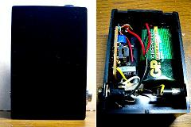
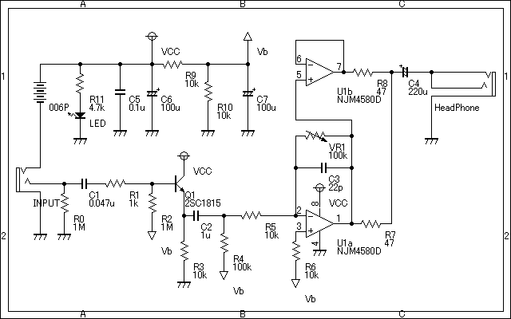
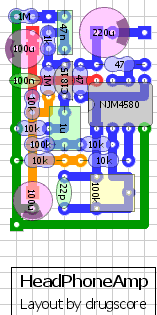

ヘッドフォンアンプ
2009年08月31日 カテゴリー：ヘッドフォンアンプ・その他アンプ

またも思いつきですがヘッドフォンアンプを作りました。主にベースを弾くときに使ったりします。
回路図は↓

WanderlustのFeadの簡易版のようなものです。オペアンプはNJM5532とかNJM4556に変えても大丈夫っぽいです。ただしヘッドフォンが壊れても責任は取れません。
音量はゲイントリマーで調節します。ちゃんとしたボリュームがないのはヘッドフォンにダメージを与えそうで本当は良くないです。1uFの後の100kΩの抵抗をボリュームにしたらいいのですが、とにかくシンプルにしたくてやめました。
レイアウトは↓

無理やり小さくしています。Voxから出てるヘッドフォンアンプみたいにしたかったんですが、あんなに小さくするのはチップ部品でも使わない限り無理そうです。